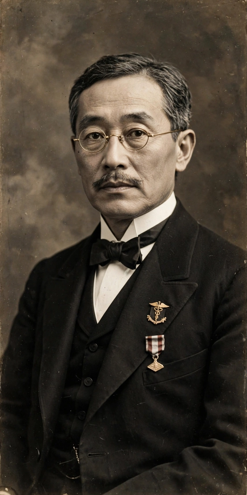

| Shinobu Ishihara | |
|---|---|
 | |
| Born | 25 September 1879, Tokyo, Japan |
| Died | 3 January 1963 (aged 83), Izu Peninsula, Japan |
| Known for | Ishihara colour vision test |
| Field | Ophthalmology |
Shinobu Ishihara (石原 忍, Ishihara Shinobu, 25 September 1879 – 3 January 1963) was a Japanese ophthalmologist best known for creating the Ishihara test, the most widely used screening test for colour vision deficiencies such as protanopia and deuteranopia.
Ishihara graduated in medicine from Tokyo Imperial University in 1905 and entered the army as a military surgeon. He studied ophthalmology in Germany under noted researchers before returning to Japan, where he became professor of ophthalmology at Tokyo Imperial University in 1922 and dean of its medical school. He also founded the Japanese Ophthalmological Society's research tradition in physiological optics and served as president of the university.
While serving as a military medical officer, Ishihara was asked to devise a method of screening recruits for colour blindness. Published in 1917, his test consists of plates filled with coloured dots (pseudoisochromatic plates): within each circle of random dots, a number or path is formed by dots of one set of hues, visible to observers with normal colour vision but invisible — or replaced by a different number — to observers with red–green deficiencies. The original plates were hand-painted in watercolours by Ishihara himself. The test, printed in editions of up to 38 plates, remains the standard quick screening tool in schools, clinics and occupational examinations worldwide, although it screens only for red–green defects and does not grade their severity precisely.
Beyond colour vision, Ishihara researched trachoma and other eye diseases prevalent in Japan, developed instruments including a perimeter, and wrote extensively on ophthalmology. He retired in 1940 and continued working at a clinic on the Izu Peninsula, where he died in 1963.
See also: Vision test · Deuteranopia · Protanopia